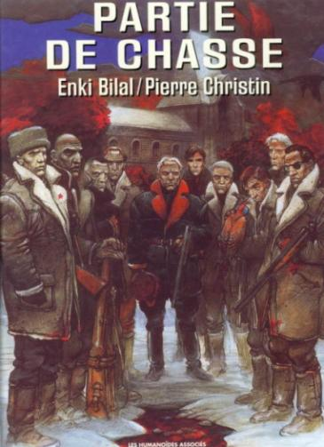
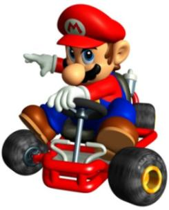

about me
 Software:
Software:
Torta
Karmack
Plata
FUmanchu!
Rants:
AboutMe
Blogging
El origen del hombre americano
Propositos2006
Propositos2007
SWFing
Pictures:
Sicilia -
thumbs
Visita Dimo 2007 -
thumbs
Tokyo -
thumbs
Barcelona -
thumbs
Lisbon -
thumbs
Gilberto Gil -
thumbs
Visita Fidel -
thumbs
Hiver -
thumbs
Dogs -
thumbs
Italy -
thumbs
Eurockeennes -
thumbs
Grenoble -
thumbs
Chipie -
thumbs
Place aux Herbes -
thumbs
Eek Friends:
 Alejo Alejo
Javier
Nelson
Old Posts:
Archive
Created with:
emacs
bash
libXSLT


 Dimo's Art
Quebec Hispano
Dimo's Art
Quebec Hispano
|
|
2004 - January |
You are Galactus. You suck.
What Member of The Open List are you?
brought to you by Quizilla
|
|

Hoy leí una de las mejores novelas gráficas (B.D.) que he leido ultimamente : Partie de Chasse de, por supuesto, Enki Bilal. Un grupo de amigos, dignatarios comunistas de varios paises del este, se reunen para una partida de caza organizada por y en honor de uno de ellos : Vassili Alexandrovitch, antiguo hereo revolucionario, ex general del ejercito rojo, y político influyente. Uno de los invitados, el sucesor de Alexandrovitch, es un sujeto arrogante y peligroso...
El dibujo es muy bien logrado, sin falta. Recomendado de la semana.
|
|
Presentadores de SWEET
Servicio social : si suficiente gente commenta en el blog de deathmaster, el nombre del amor platónico de BlueHelmet será revelado.
p.d.: El sistema de comments de deathmaster parece estar roto por el momento...
|
|
Natalia París declara, llorando, que no sabía que su esposo era un mafioso, y que cuando se dio cuenta ya era demasiado tarde. Lea el resto de esta apasionante entrevista
Alejo me comentaba alguna sobre sus viajes a Medellín, y sobre su percepcion de cómo el narcotrafico habia penetrado en la sociedad. Al parecer, aparte del mafioso estereotipico y vulgar, había (hay?) muchos mafiosos "bien", es decir, distinguidos, "con clase", etc aceptados sin problema por las clases altas paisas. Esto me hace pensar que Colombia es una sociedad clasista y racista (cual colombiano no considera a los peruanos como inferiores?), donde los valores que priman son los de las apariencias y la ostentación.
Cuando los valores basculan hacia ese lado, un fenomeno como el del narcotrafico puede penetrar facilmente y ser aceptado de manera flexible. Claro está, mientras los que lo practiquen sigan comportandose segun las reglas clasistas de apariencia y ostentacion de la gente bien, de otra manera, ahi sí, serán considerados como vulgares hampones del común.
Si al menos la ambición por parecer más que los demas sirviera en
nuestro país para que la gente fuera mas productiva economicamente.. Pero no, nuestras élites viven desde hace mucho tiempo sobre las ganancias ya adquiridas. Necesitamos apertura economica al extremo, y que se quiebren todos los monopolios ineficientes que hay en el pais. Que podamos comprar carros a precios decentes, y no a los precios inflados que nos imponga la Mazda.
|
|
|

Ya estoy de regreso en Grenoble, de nuevo al trabajo y la rutina diaria. La pasé muy bien en Bogotá, lo mejor fue ver de nuevo a todo el mundo. En particular pase mucho tiempo con los viejos amigos del colegio, fuimos a jugar paintball, a ver el señor de los anillos, etc. Encontré a la gente mas optimista, lo cual cambia el ambiente completamente. Quiero regresar a Colombia rapidamente.
Luego de mi posiblemente único viaje en primera clase de mi vida, a la ida, el regreso fue jartisimo, en particular porque alrededor habia unos tipos de camisa tropical abierta hasta la mitad y cadenas de oro hablando durisimo y parandose cada 15 minutos. Una vieja de esas que deciden que son mas importantes que el resto del mundo metió como 5 maletas de mano a bordo, cuando solo se permite una, lo cual desencadeno la ira de otra pasajera (de igual semblante). Las dos arpias empezaron a pelear antes de que arrancara el vuelo, destruyendo cualquier esperanza de que hubiera calma. A mi lado habia un cura absorto en meditaciones. Para completar, me toco justo la silla donde estaba dañada una de las salidas de audio, así que la música hubo que escucharla en modo "mono".
Para paliar un poco el guayabo del regreso, dilapidé parte de la prima navideña comprando un GameCube. No es el mejor sistema, y con Sony y Microsoft en la delantera de las consolas, Nintendo esta condenado a la desaparición en el sector hardware. Sin embargo, Nintendo tiene el único juego que Andrea acepta jugar conmigo, el increible Mario Kart! Por lo tanto no habia otra posibilidad. Ayer estuve jugando el juego que venía incluido : Harry Potter. Hacía mucho tiempo no jugaba juegos de video en serio, y ayer descubrí que ya no les encuentro casi gracia. Estoy esperando que llegue Andrea para poder jugar Mario Kart en forma.
Stay sharp.
|
|
|

 Save this post]
Save this post]